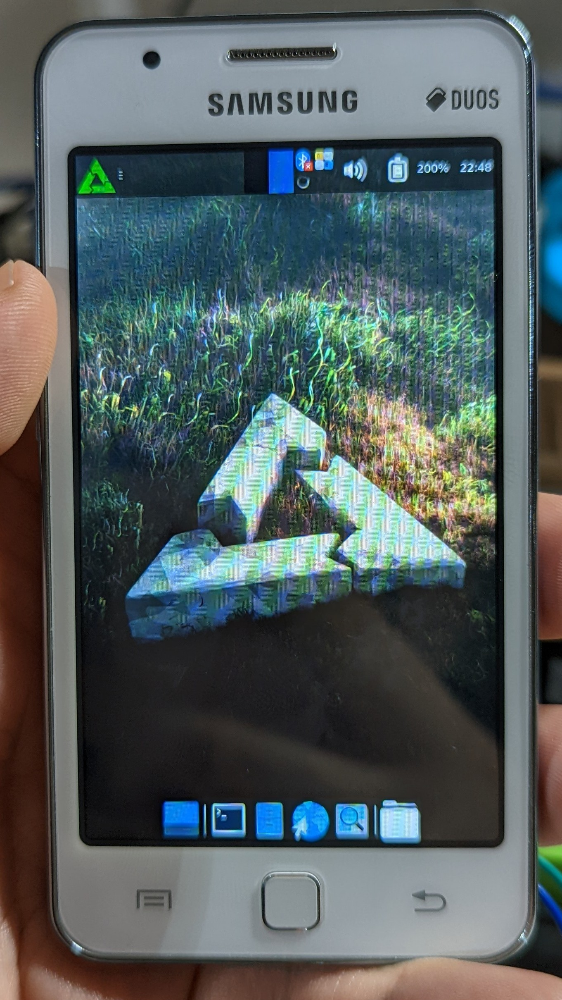

Samsung Z1 (samsung-kiran)
|
 Samsung Z1 running xfce4 | |
| Manufacturer | Samsung |
|---|---|
| Name | Z1 |
| Codename | samsung-kiran |
| Released | 2015 |
| Category | testing |
| Original software | Tizen 2.4.0 (Magnolia) |
| postmarketOS kernel | 3.10.17 |
| Hardware | |
| Chipset | Spreadtrum SC7727S |
| CPU | 2x ARM Cortex-A7 |
| GPU | Mali 400 MP1 |
| Display | 480x800 TFT |
| Storage | 4 GB |
| Memory | 768 MB |
| Architecture | armv7 |
{kind=link}
| USB Networking |
Works
|
|---|---|
| Flashing |
Works
|
| Touchscreen |
Works
|
| Display |
Works
|
| WiFi |
Works
|
| FDE | |
| Mainline |
Broken
|
| Battery |
Works
|
| 3D Acceleration | |
| Audio |
Works
|
| Bluetooth | |
| Camera | |
| GPS | |
| Mobile data | |
| SMS | |
| Calls | |
| USB OTG |
Broken
|
| NFC |
Unavailable
|
| Accelerometer | |
|---|---|
| Magnetometer |
Unavailable
|
| Ambient Light |
Unavailable
|
| Proximity |
Unavailable
|
| Hall Effect |
Unavailable
|
| Barometer | |
| Power Sensor | |
| Camera Flash | |
|---|---|
| Keyboard | |
| Touchpad | |
| USB-A | |
| HDMI/DP | |
| Ir TX |
Unavailable
|
| Ir RX | |
| Stylus | |
| Haptics | |
| Ethernet | |
| FOSS bootloader | |
Contents
Contributors
- peremen
Maintainer(s)
Users owning this device
How to enter flash mode
Similar as Samsung's Android counterparts:
- Hold Power + Home + Volume Down buttons to enter flash mode.
- Hold Power + Home + Volume Up buttons to enter recovery mode.
/proc/cmdlines for different power on reasons:
- Normal mode:
mem=768M ram=768M root=/dev/mmcblk0p24 ro rootfstype=ext4 rootwait bootmode=normal pwron.reason=0x0 ... - Recovery mode:
mem=768M ram=768M root=/dev/mmcblk0p24 ro rootfstype=ext4 rootwait systemd.unit=recovery-mode.target pwron.reason=0x0 ... - Plugging in charger:
mem=768M ram=768M root=/dev/mmcblk0p24 ro rootfstype=ext4 rootwait systemd.unit=charging-mode.target pwron.reason=0x0 ...
Installation/Known Problems
Technically similar as Samsung's Android counterparts, however, there are some caveats. The stock Tizen boot image uses dzImage, basically vmlinuz + Spreadtrum dtb binary (can generate using dtbtool-sprd) with custom header. Because Tizen kernel does not enable initramfs, and S-BOOT on this device seems to lack support of it, we are using isorec. The current postmarketOS kernel will use KERNEL to store dzImage, RAMDISK to store initramfs. Make sure to flash both partitions when going from Tizen to postmarketOS and vice versa.
Booting non-stock kernel image will show a red exclamation mark on the top left of boot screen.
The sprdfb driver of Tizen kernel is different from Android devices using the same SoC: it has DRM driver for this SoC, predates what is in the mainline. Graphics memory management seems to be done using libtbm in Tizen and X.org proprietary driver. There is no memory region for sprdfb driver mentioned in the .dts file, thus mmap() to the framebuffer returns only an error. The postmarketOS kernel patch manually includes the memory region in the .dts file and modifies the memory allocation to make framebuffer work. Lack of proper Spreadtrum datasheet makes further progress hard.
Components
- UART: 1.8 V, See Serial debugging:Cable schematics#Samsung_Galaxy_S7_and_S5. 150K Ohm resistor enables serial console.
- Wi-Fi: Broadcom BCM4343S, requires firmware (from either Tizen or any other)
- GPS: Broadcom BCM47520
- MUIC: Richtek SM5504
- Charger: Richtek SM5701
See also
- pmaports!3234 Initial merge request
- Device package
- Kernel package
- Kernel source (mirrored from Samsung OSS Center)